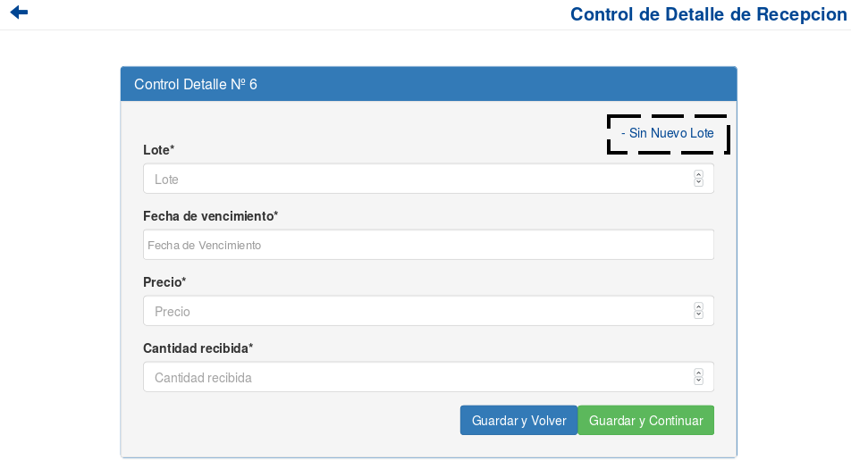

Recepcion de Pedidos de Laboratorio¶
Se presentará una pantalla que contendrá un listado con todos los Pedidos a Laboratorio que no hayan sido completamente recepcionados hasta la fecha.

Junto con el listado, se ofrecerán una un conjunto de funcionalidades que permitirán manipular estos Pedidos de Laboratorio. Estas funcionalidades son:
Registrar Recepción¶
Si el usuario desea comenzar a registrar la recepción de un Pedido a Laboratorio, deberá presionar el botón Registrar.

A continuación el sistema lo redirigirá a la siguiente pantalla:

En este punto el usuario deberá ingresar los datos del remito asociado al Pedido a Laboratorio del cual se quiere registrar recepción. Los datos solicitados son el número de remito y su correspondiente fecha. A continuación deberá presionar el botón Continuar.
Atención
El sistema siempre validará que la información ingresada sea correcta. En caso de que los datos ingresados sean incorrectos el sistema lo informará. En este punto, las posibles causas de errores son:
- Uno o más campos vacios.
- El número de remito ya está cargado en el sistema.
- La fecha no existe.
- La fecha ingresada esta fuera del rango válido.
Una vez presionado el botón Continuar, se mostrará la siguiente pantalla:

Esta pantalla es la encargada de visualizar aquellos detalles asociados al Pedido a Laboratorio que aún no han sido completamente recepcionados.
Esta pantalla ofrece las siguientes funcionalidades:
Acusar Recepción de un Detalle¶
Si el usuario desea acusar la recepción de un detalle del Pedido a Laboratorio, deberá presionar el botón Acusar Recepción de un Detalle que se encuentra asociado al mismo (detalle).

Una vez realizado el paso anterior el sistema lo redirigirá a la siguiente pantalla:

En esta parte, se presentará el formulario que el usuario deberá completar para poder acusar la recepción del detalle seleccionado.
El sistema ofrece dos formularios para acusar recepción de un detalle:
- Acusar Recepción con un lote existente en el sistema.
- Acusar Recepción con un nuevo lote.
El usuario podrá “navegar” entre estas dos opciones y seleccionar la que más le convenga.
Importante
El sistema habilitará estas dos opciones siempre y cuando el medicamento asociado al detalle posea lotes activos en el sistema. Es decir, si un medicamento no posee lotes registrados, el sistema solo habilitará la opción para Acusar Recepción con un nuevo lote.
Si el usuario selecciona la modalidad de Acusar Recepción con un lote existente en el sistema deberá proceder a ingresar los datos solicitados.
Atención
El sistema siempre validará que la información ingresada sea correcta. En caso de que los datos ingresados sean incorrectos el sistema lo informará. En este punto, las posibles causas de errores son:
- Uno o más campos vacios.
- No se ingresó una cantidad.
- La cantidad ingresada es superior a la cantidad pendiente del detalle.
Si el usuario selecciona la modalidad de Acusar Recepción con un nuevo lote deberá proceder a ingresar los datos solicitados (se le suman los datos correspondientes al nuevo lote).
Atención
El sistema siempre validará que la información ingresada sea correcta. En caso de que los datos ingresados sean incorrectos el sistema lo informará. En este punto, las posibles causas de errores son:
- Uno o más campos vacios.
- La fecha de vencimiento del lote esta en el rango que el sistema considera como “lote vencido”.
- La cantidad ingresada es superior a la cantidad pendiente del detalle.
Una vez completado formulario elegido, el usuario tendrá dos opciones:
- Presionar el botón
Guardar y Volver.- Presionar el botón
Guardar y Continuar.
El botón Guardar y Volver permite guardar la recepción del detalle en el pedido y volver a la pantalla que muestra los detalles con cantidad pendiente del Pedido a Laboratorio.
El botón Guardar y Continuar permite guardar la recepción del detalle en el pedido y seguir acusando recibos del mismo.
Nota
Si el sistema detecta que el detalle ha sido completamente recepcionado automáticamente redirijirá a la pantalla anterior (la que se encarga de visualizar los detalles del Pedidos a Laboratorio que aún no han sido completamente recepcionados). Además deshabilitará el botón Acusar Recepción de un Detalle asociado a este detalle.
Registrar Pedido¶
Si el usuario desea registrar la recepción del Pedido a Laboratorio, deberá presionar el botón Registrar.
Atención
El sistema siempre validará que la información del Pedido a de Farmacia sea correcta. En caso de que esta información sea incorrecta el sistema lo informará. En este punto, las posibles causas de errores son:
- El pedido no contiene detalles
- El pedido ya ha sido registrado anteriormente
Una vez presionado el botón Registrar, el sistema se encargará de actualizar los detalles del Pedido a Laboratorio (de ser necesario también el estado del pedido) y se mostrará la siguiente ventana emergente (modal).

Formulario de Búsqueda¶
Si el usuario desea visualizar sólo aquellos Pedidos a Laboratorio que cumplan con algunos criterios en específico, deberá utilizar el formulario de búsqueda.

Este formulario cuenta con dos modalidades:
- Búsqueda simple: permite buscar los Pedidos a Laboratorio (que no hayan sido completamente recepcionados) por laboratorio.
- Búsqueda avanzada: permite buscar los Pedidos a Laboratorio (que no hayan sido completamente recepcionados) por laboratorio, fecha desde, fecha hasta.
Nota
Todos los campos son opcionales, de no especificarse ningún criterio de búsqueda el sistema mostrará todos los Pedidos a Laboratorio.
El usuario tendrá que ingresar los parámetros de búsqueda en el formulario, y presionar el botón Buscar. El sistema visualizará aquellos Pedidos a Laboratorio (que no hayan sido completamente recepcionados) que cumplan con todas las condiciones especificadas.
Si el usuario desea limpiar los filtros activos, deberá presionar el boton Limpiar.